1968
A Nation at the
Breaking Point
War. Assassination. Protest. An election.
Explore how a year of upheaval became a turning point in Americans’ trust in their leaders—and in one another.
How does a year become a turning point?
In 1968, Americans confronted more than a series of shocking headlines. They faced a crisis of confidence in the institutions that claimed to represent them. The Vietnam War challenged the government's credibility. The assassinations of Martin Luther King Jr. and Robert F. Kennedy devastated people who hoped that protest and electoral politics could bring peaceful change. At the Democratic convention in Chicago, conflict between demonstrators, police, and party leaders exposed competing understandings of democracy itself.
This exhibition argues that war, political violence, and protest reinforced one another, weakening faith in national leadership while strengthening demands for order. Following William H. Chafe's interpretation, it treats 1968 as a turning point in the struggle between movements for social change and the political forces resisting them. The election did not resolve those conflicts; it revealed how differently Americans understood their causes and solutions.
The photographs and campaign materials displayed here ask visitors to look beyond familiar images of chaos. Who was seeking change? Which institutions seemed unable to respond? Whose fears became politically powerful? Moving from Tet to the election, the exhibition shows how the same year's events could inspire demands for justice, deepen despair, and build support for a different political direction.1
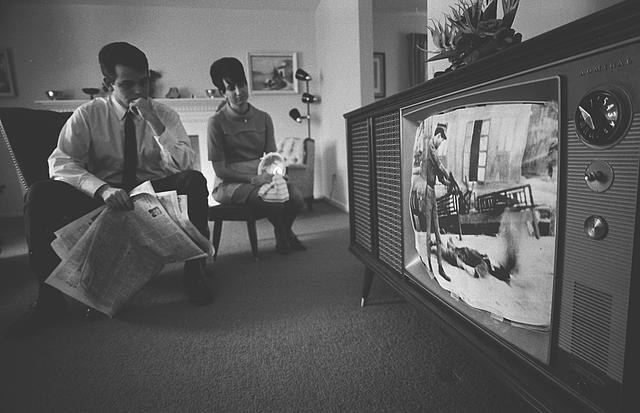
Warren K. Leffler · February 13, 1968
Vietnam & the credibility gap
What happens when official confidence collides with the images of war?
The Tet Offensive transformed an overseas war into an immediate crisis of confidence at home. Before the attacks, the Johnson administration had promoted an optimistic account of American progress. General William Westmoreland's public assurances suggested that persistence would bring victory. In late January, coordinated communist attacks across South Vietnam made that confidence difficult to sustain. For American viewers, the ability of enemy forces to strike widely raised an unsettling question: how could a supposedly weakening opponent mount such an offensive?
Chafe emphasizes the difference between military results and political consequences. The attacks inflicted heavy losses on communist forces, yet those losses did not restore trust in Washington. Fighting in Saigon and the destruction of Vietnamese cities contradicted the impression of increasing security. The central issue became the gap between official explanations and observable events. Military claims of success could not easily answer a public newly uncertain about the purpose, cost, and prospects of the war.
Television intensified that contradiction. Images selected for evening broadcasts brought the conflict into American homes, connecting distant destruction to domestic judgment. The photograph of a couple watching Vietnam coverage makes this relationship visible: civilians were not on the battlefield, but the war entered the space of everyday life. Images of smoke and ruined streets likewise challenge visitors to consider what progress could mean amid extensive destruction. These photographs cannot represent every experience of Tet, but they show why confident language alone could not explain the war to viewers.
The offensive also changed the possibilities of opposition. Chafe describes growing doubt among journalists, officials, and voters, giving antiwar criticism greater legitimacy. Eugene McCarthy's challenge to Johnson gained momentum as dissatisfaction widened. Not every dissatisfied voter wanted withdrawal; some preferred escalation. That disagreement matters. Tet did not produce a unified peace movement. It united otherwise different Americans in questioning the president's leadership. The war's political consequences therefore reached beyond foreign policy: an administration that could not sustain belief in its account of Vietnam also struggled to maintain authority at home.3
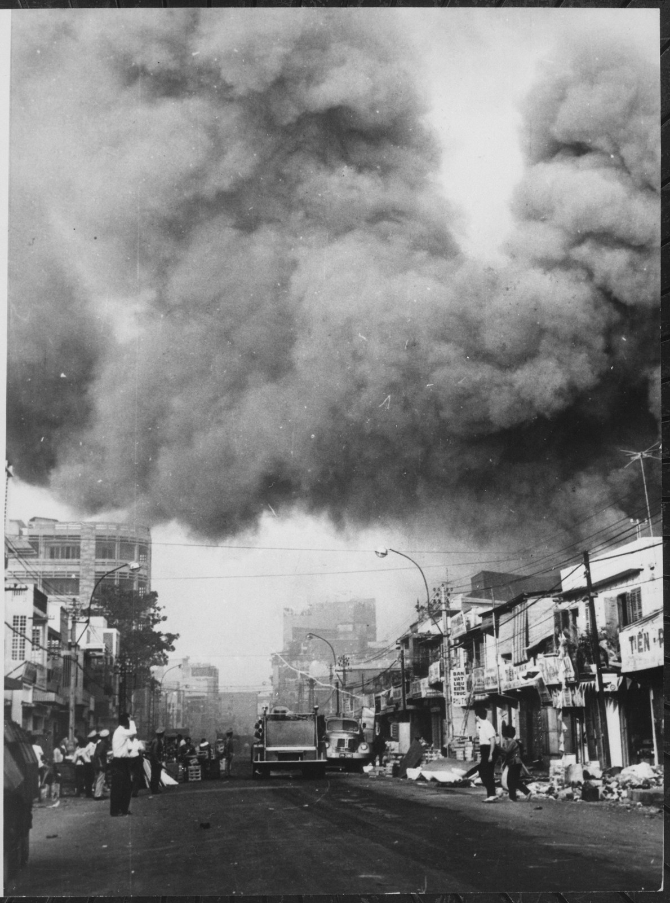
Photographer unidentified · 1968
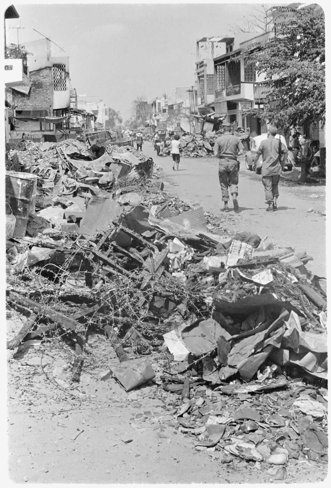
Photographer unidentified · 1968
A presidency under pressure
Could changing policy restore trust in the presidency?
Lyndon Johnson entered 1968 expecting to seek another term. By the end of March, he had announced that he would neither seek nor accept his party's nomination. His withdrawal revealed how deeply Vietnam had weakened presidential authority. The crisis was not simply that critics disliked the war. The president's advisers, electoral supporters, and policy experts increasingly disagreed over whether his strategy could succeed at an acceptable cost.
After Tet, military leaders requested a large increase in American forces. Civilian dissenters within the administration used the request to reopen fundamental questions about the war. Chafe describes Defense Secretary Clark Clifford asking what additional troops would accomplish, whether victory could be assured, and what escalation would do to support at home. These questions shifted attention from the determination to continue fighting toward the relationship between military means and political ends. More soldiers could not automatically produce a workable strategy.
Electoral pressure made the internal debate harder to contain. McCarthy's strong showing in the New Hampshire primary demonstrated Johnson's vulnerability. Robert Kennedy's entry into the race added another challenge. Yet dissatisfaction with Johnson was not identical to agreement about peace. As Chafe notes, even some voters favoring stronger military action supported McCarthy as a protest. Opposition to the president therefore brought together conflicting expectations, complicating any attempt to rebuild consensus.
Johnson's March 31 address combined a move toward de-escalation with the announcement of his withdrawal. The photograph of the televised address captures a president using the same medium that had exposed the war's contradictions to explain a change in course. Ben Shahn's McCarthy campaign poster offers a contrasting political language: the dove presents peace as an alternative around which voters could rally.
The contrast illustrates the limits of Johnson's position. He hoped that stepping aside could reduce division and create room for negotiations. But removing himself from the campaign could not erase the consequences of earlier decisions. His experience tied the exhibition's themes together: war weakened trust, protest entered electoral politics, and a presidency associated with ambitious domestic reform found its future constrained by a conflict overseas.6
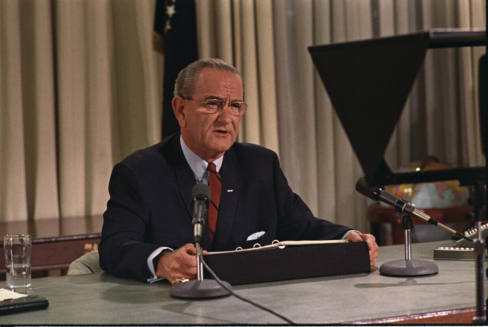
Yoichi Okamoto · March 31, 1968
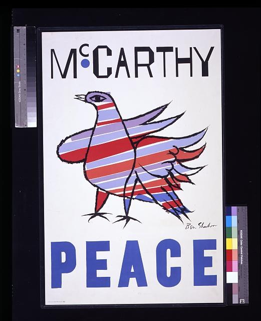
Ben Shahn · 1968
The struggle for justice
What did equality require beyond the end of legal segregation?
Martin Luther King Jr.'s final campaign challenged Americans to connect racial equality with economic power. Chafe presents King as a leader whose thinking had developed beyond the belief that antidiscrimination laws alone could secure justice. Legal rights mattered, but people also needed the resources to exercise them. Poverty, unequal opportunity, and the costs of war made racial injustice part of a wider problem in American society.
That perspective shaped the Poor People's Campaign. King hoped to bring poor people to Washington to demand action against economic inequality. His support for striking sanitation workers in Memphis followed the same logic. Their struggle over union recognition and working conditions joined questions of race, labor, and dignity. Memphis was therefore more than a local dispute: it put the relationship between civil rights and economic justice at the center of public attention.
King also faced serious divisions over strategy. Chafe describes pressure from militants who questioned nonviolence and organizational tensions that complicated collective action. King's insistence on peaceful protest was not a passive response to those problems. It was a deliberate attempt to preserve a movement capable of confronting injustice without surrendering its ethical commitments. The photograph of King in Memphis on April 3 asks visitors to remember this active political work, rather than seeing his final days only through the assassination that followed.
King's murder on April 4 produced grief and anger across the country. Violence in more than one hundred cities exposed the depth of frustration that his leadership had sought to channel toward change. Public responses could also obscure his goals: images of disorder risked displacing attention from the inequalities that had brought him to Memphis in the first place.
The June photograph of Poor People's Campaign marchers shows that organizing continued after his death. It complicates any interpretation in which assassination ended the struggle. Yet the loss of King damaged a powerful effort to connect peace, racial justice, and economic reform. His absence deepened the year's central dilemma: could Americans achieve fundamental change through nonviolent collective action when even its most prominent leader could not be protected from violence?9
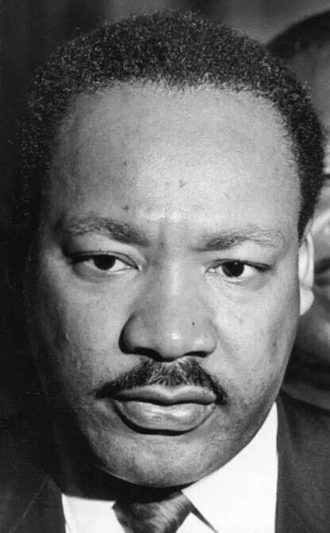
William Leaptrott · April 3, 1968
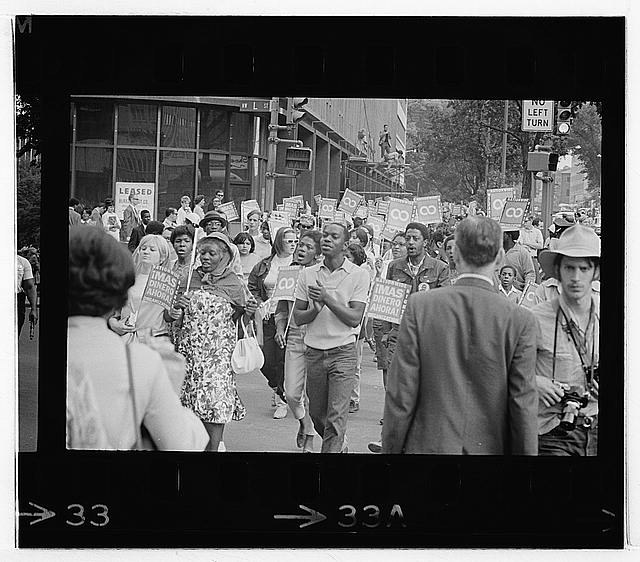
Warren K. Leffler · June 18, 1968
Hope & political violence
Could a divided reform movement become an electoral coalition?
Robert F. Kennedy's presidential campaign offered one answer to the crisis of confidence: use electoral politics to connect opposition to the war with demands for racial and economic justice. Chafe emphasizes Kennedy's identification with people whose experiences often remained distant from comfortable Americans. Encounters with poor families, Black communities, migrant workers, and Native Americans helped shape his argument that prosperity and political rights were distributed unequally.
Kennedy's campaign materials present the public face of that effort. The two portrait handouts invite identification with a recognizable leader, turning a familiar face and signature into a political appeal. These objects demonstrate the importance of personal leadership, but they also invite a harder question. Could enthusiasm for an individual become a durable coalition among groups with different interests and expectations? Chafe's account makes that uncertainty central to Kennedy's significance.
His candidacy began with division rather than unity. Kennedy initially declined to challenge Johnson, then entered the race after Tet and McCarthy's strong performance in New Hampshire. McCarthy supporters resented the late arrival of a better-known rival. Both candidates opposed the administration's war policy, but they differed in style, constituency, and approach to presidential power. Kennedy sought to use a strong presidency for social change; McCarthy questioned the concentration of executive authority. Their shared opposition therefore did not eliminate competition within the reform movement.
Kennedy nevertheless demonstrated an ability to reach different communities. Chafe describes his efforts to persuade white workers and Black voters that security and justice depended on one another. Victories in Indiana and Nebraska, followed by defeat in Oregon, revealed both the reach and the limits of that appeal. His California victory offered renewed hope that competing demands could be brought together.
The assassination that followed his victory speech destroyed that immediate possibility. Its historical meaning extended beyond the loss of a candidate: many supporters lost confidence in a political route they had still been willing to try. Chafe does not establish that Kennedy would certainly have won or transformed the country. Instead, his account shows how political violence removed a plausible vehicle for change, leaving grief and unresolved possibility in its place.12
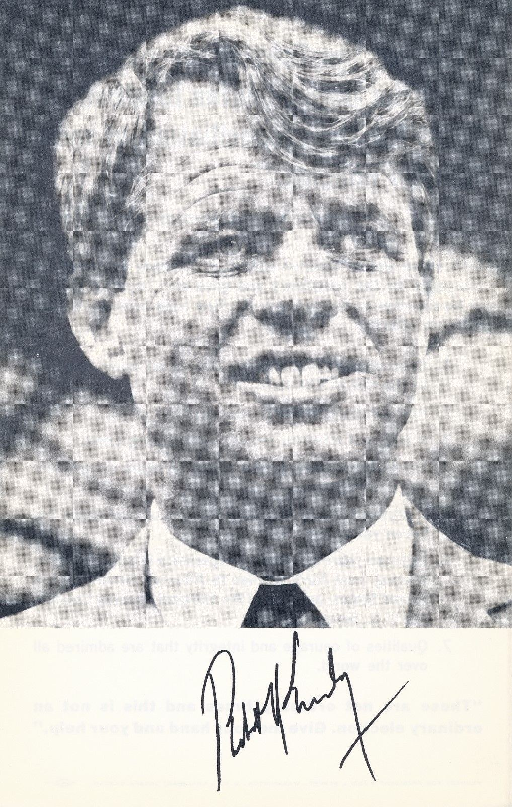
Kennedy for President · 1968
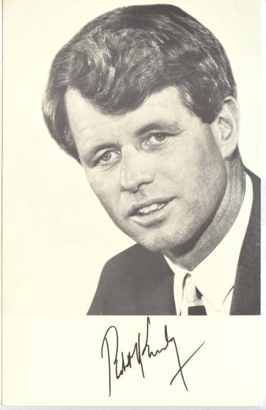
Kennedy for President · 1968
Democracy in the streets
Who could claim to speak for the nation?
The Democratic National Convention in Chicago brought the year's conflicts into one highly visible setting. Inside, party leaders moved toward nominating Vice President Hubert Humphrey. Outside, demonstrators challenged the war and the political arrangements that seemed to exclude them. The resulting confrontation concerned more than a candidate. It raised competing claims about who represented the public and how democratic disagreement should be expressed.
Chafe describes a protest movement divided among antiwar campaigners, disaffected young people, and the Yippies, whose theatrical tactics challenged conventional politics. These participants did not all share a single strategy. Some sought to influence the party; others aimed to expose or disrupt it. Remembering those differences prevents the crowd from becoming an undifferentiated symbol of rebellion. Protest itself contained disagreements over whether existing institutions could still respond.
Mayor Richard Daley answered the anticipated demonstrations with extensive policing and restrictions. In Chafe's account, the confrontation intensified as police used violence against demonstrators, with television carrying the scenes to a national audience. The photograph of a young man facing National Guard soldiers makes the imbalance of organized power visible. It does not explain every encounter, but it asks viewers to consider the relationship between maintaining order and permitting dissent.
Conflict also entered the convention hall. The photograph of Illinois delegates reacting to Senator Abraham Ribicoff's criticism of police tactics shows that the argument outside could not be sealed off from the official proceedings. The image of Senator Albert Gore Sr. at the microphone similarly locates political debate within the institution itself. Together, these sources reveal simultaneous struggles over authority in the street and on the convention floor.
Humphrey's nomination did not resolve the party's divisions. For many dissenters, Chicago confirmed that established leadership would defend its position rather than embrace their demands. Other viewers interpreted disorder as evidence that stronger authority was necessary. The same televised events could thus produce opposite conclusions. Chicago advanced the exhibition's central argument by turning the breakdown of trust into a contest over democracy's meaning: was its immediate need greater responsiveness to protest, or greater protection against disruption?15
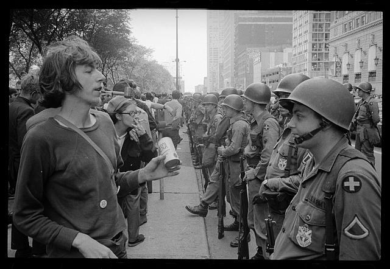
Warren K. Leffler · August 1968 (catalog date fields differ)
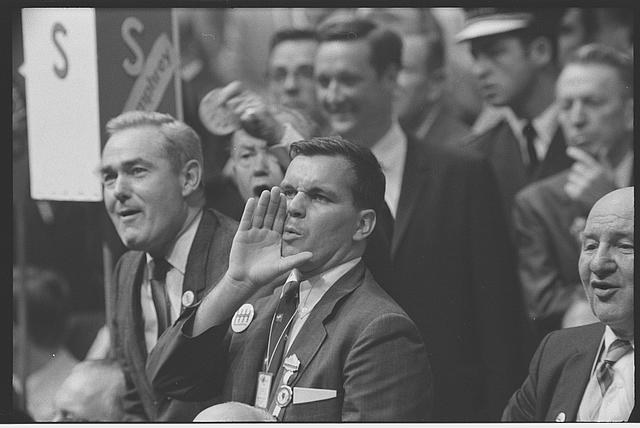
Warren K. Leffler · August 28, 1968
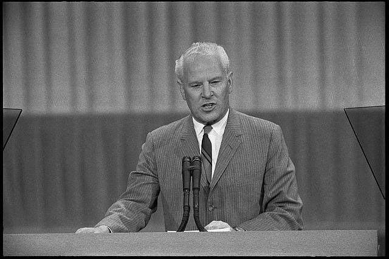
Thomas J. O’Halloran · August 28, 1968
The contest over order
What could an election settle in a divided country?
The 1968 presidential election translated the year's crises into competing political appeals. Richard Nixon promised stability to voters disturbed by war, protest, and social conflict. Hubert Humphrey tried to reunite a Democratic coalition divided over Vietnam and the direction of reform. George Wallace offered an openly confrontational alternative, drawing support from racial resentment and hostility toward established elites. These campaigns made clear that Americans disagreed not only about solutions but also about what constituted the nation's central problem.
Chafe interprets Nixon's strategy as an effort to mobilize Americans who felt their values and social position threatened. The Nixon campaign poster presents a broad community of supporters surrounding the candidate. Read as persuasion rather than a neutral portrait of public opinion, it makes unity appear achievable through allegiance to one political leader. Its message gains significance beside Chafe's account of a campaign drawing strength from division and anxiety.
Humphrey faced a different challenge. As Johnson's vice president, he could not easily separate himself from the administration's war policy. The image of Humphrey during the campaign represents a candidate seeking public support while carrying the burdens of incumbency. Chafe describes a late effort to recover labor support and narrow the distance from Nixon, but the party's earlier divisions could not simply be erased by the final weeks of campaigning.
Wallace's candidacy revealed another important fracture. His appeal extended beyond the South, reaching some white working-class voters whose support had once been central to Democratic strength. That response demonstrated how racial conflict and anxiety about social change could weaken older political loyalties. Appeals to order did not have identical meanings for every voter, but they could bring different grievances into the same political camp.
Nixon won the presidency without a majority of the popular vote. The result therefore should not be read as a unified national verdict or proof that the underlying conflicts had ended. Instead, it showed how a fragmented electorate could produce a decisive institutional outcome. The election preserved a route for transferring political power while confirming the difficulties facing movements that had hoped to use that route for broader social transformation.19
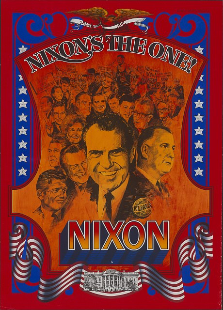
JIMINI Productions · 1968
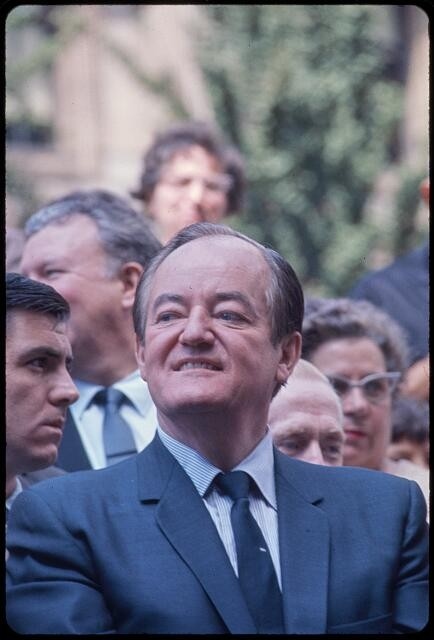
Bernard Gotfryd · 1968
A turning point, not an ending.
The crises of 1968 did not all have the same cause, but their effects accumulated. Tet weakened the government's account of the Vietnam War. Johnson's withdrawal exposed the political consequences of that failure. King's assassination struck at a movement linking racial equality, economic justice, and peace. Kennedy's assassination removed a candidate who had tried to translate overlapping demands for change into electoral power. Chicago then made the distance between party leadership and dissent visible to a national audience.
The election brought these conflicts into a single contest without settling them. Chafe interprets the year as a turning point in which movements for social transformation lost political ground and appeals defending order gained strength. That interpretation helps explain why an election could demonstrate the survival of democratic institutions while leaving many activists doubtful that those institutions would deliver justice.
The visual record also reminds us that this history involved choices, organizing, persuasion, grief, and fear. Outcomes that now seem inevitable were uncertain to the people living through them. The enduring significance of 1968 lies in that tension: Americans continued to participate in public life even as they disagreed profoundly about what democracy should promise and whom it should serve.22
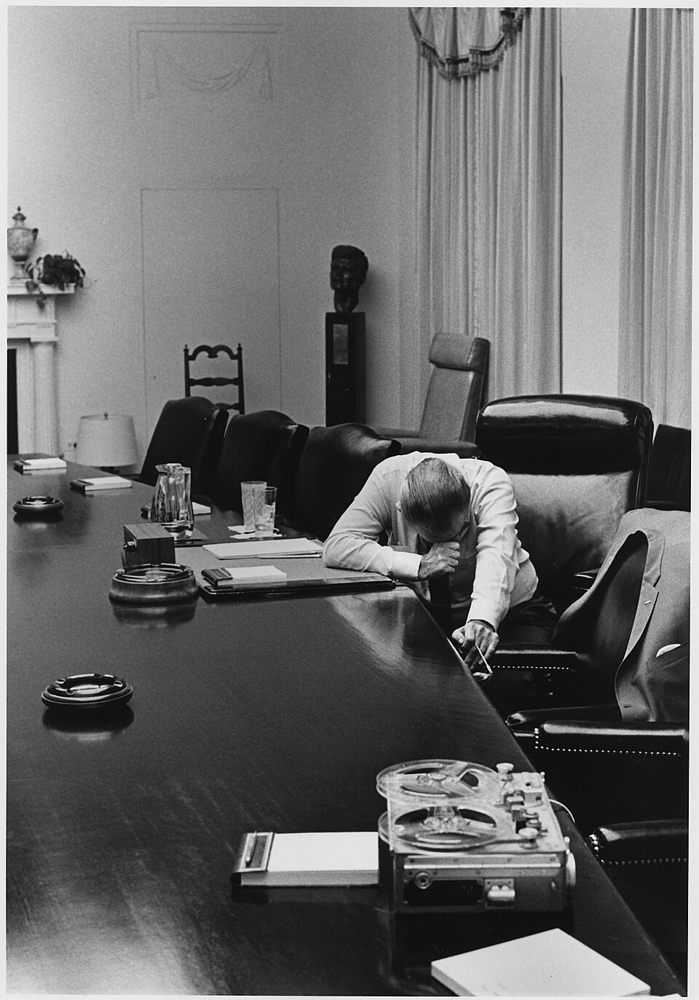
Jack Kightlinger · July 31, 1968
Sources & bibliography
Chafe, William H. The Unfinished Journey: America Since World War II. 9th ed. New York: Oxford University Press, 2022. Chapter 12, “1968.”
The historical interpretation and written panels draw on the assigned chapter. Section titles and page positions within the supplied 30-page chapter PDF identify passages; those PDF positions are not printed book page numbers.
Each of the fifteen visuals has a numbered footnote below its exhibition section, linking to the item’s catalog or reproduction record. Click any image to inspect a larger copy.
Visual collections: Library of Congress, National Archives and the Lyndon B. Johnson Presidential Library, and public-domain reproductions available through Wikimedia Commons.